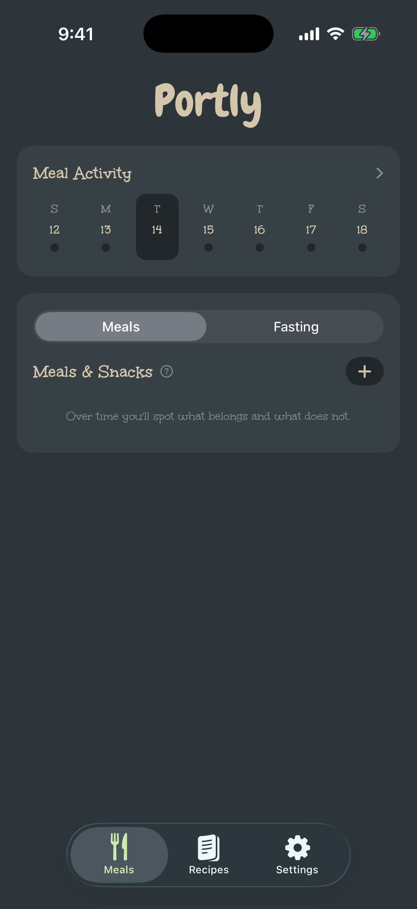
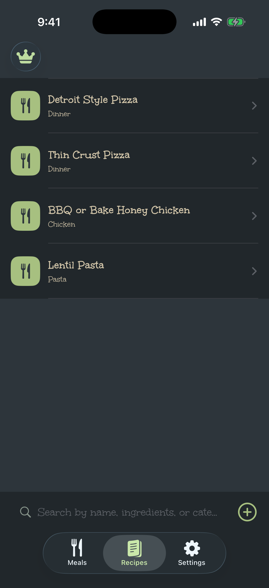
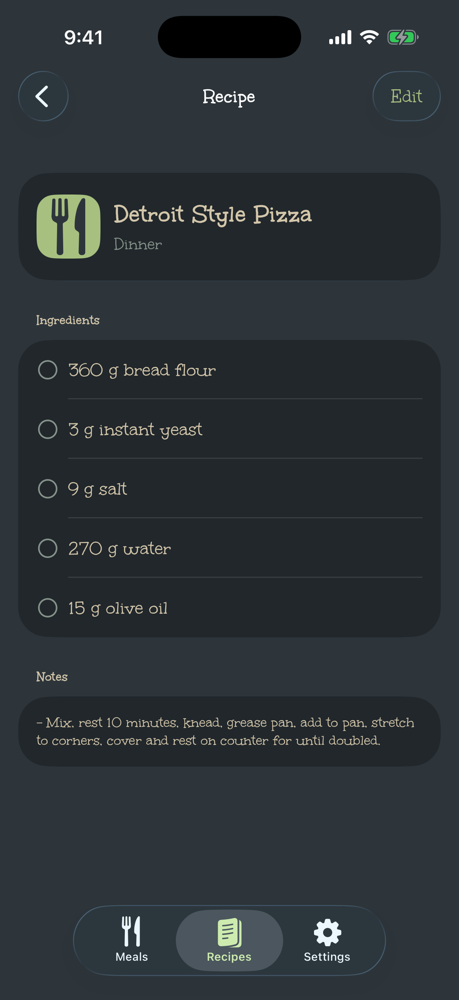

Meal history and saved meals
Record meals and snacks, attach photos, reuse saved meals, and look back across your activity.
Portly keeps meal history, saved meals, recipes, nutrition details, and shopping lists together in a focused app that works without an account.
Log meals, browse built-in and saved recipes, and keep cooking details close at hand.



Useful structure for meals and recipes, with controls that stay out of the way.
Record meals and snacks, attach photos, reuse saved meals, and look back across your activity.
Add nutrition labels and serving details, then follow the numbers that matter to you.
Save ingredients and notes, import recipe PDFs or photos, and export recipe PDFs whenever you choose.
Combine selected recipes into a grouped list and check off ingredients while you shop.
Keep allowed and avoided foods handy while reviewing recipes and meal choices.
Choose a visual style that makes a daily utility feel like your own.